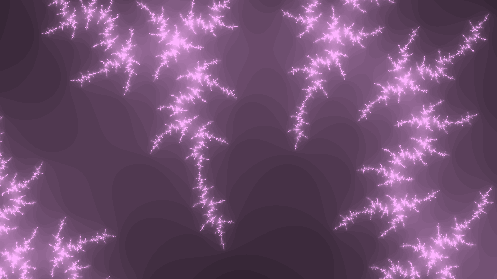
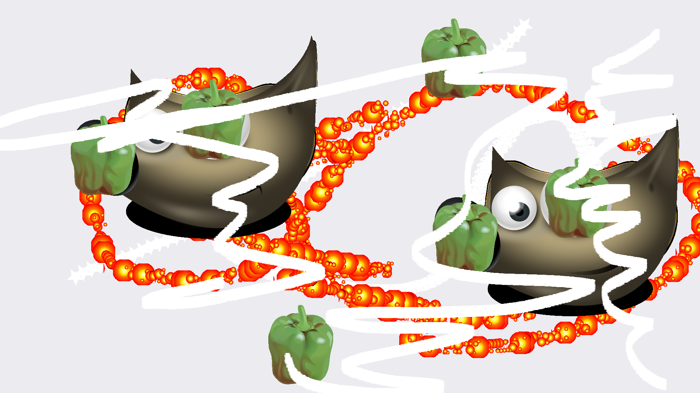

oftren it seems like to mkaer art one must be some sort of trained artist. years of experience and the like. media would suggest you havbe to at the very least take yourself too seriously.
but i would argue this isn't theh case. after all, look aty outside art or stream oif conciousness writing. thats now what im here to talk about tho: im gionna mention the realm of net art.
i came across a site the other day. they made copies of another website, Called hell.com. then they copied another website (which i forget the name of). then they made a copy of jodi.org. some of thse ecopies they modified; some they didn't. and theres the great part:a ll of it was considerd net art, at leasrt to them. they describned it as raising questions about how much the conventional notion of 'talent' is required to make art. i kinda like tyhat.
what avbout methoidoly? if i click a signle button in an imafge editor and generate a fractal,, is it art? my answer to this is: FUCK IT. WHY NOT. DO WHATEVER THE FUCK YOU WANT AND ITS ART. O.
now i present two talentlewss art:
 